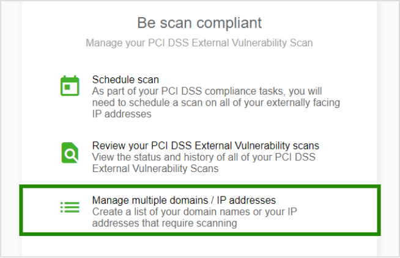

Welcome to the Clover Security Learning Center
Find what you’re looking for from the menu below
The Clover Security portal has been designed to be as intuitive as possible. When you log in you will be guided through your compliance reporting process from start to finish. Despite this, merchants have told us that reporting compliance is complicated and can be confusing. So, we’ve put together the content in this guide to help where we can.
Remember, you can always contact our dedicated support team on the details found in the menu if you get stuck.
Use the navigation menu below to explore our learning center.
Logging In And Registering
When you are enrolled into Clover Security you will receive two welcome emails like the one you see to the right. The first email will include your username for the portal. The second one will ask you to set your password.
Click ‘Set password here’ from the password email.
You will be asked to choose a password for your portal access. Input your password and select ‘UPDATE PASSWORD’.
SET YOUR PASSWORD

LOGIN WITH NEW CREDENTIALS

You will then need to log into the portal with the new credentials you just set
Upon first login you will be asked to first review and accept the terms and conditions and then update your credentials – select a new username and confirm your email address.
You will then be brought to the first page of your profile.
UPDATE YOUR DETAILS

REGISTER ON THE PORTAL

On the next page you will be prompted to input your Merchant ID and also verify the security code on the right-hand side. We will then send login credentials to the registered email address associated with the Merchant ID you input.
If you do not receive an email, you will need to contact our support desk.
SET YOUR PASSWORD
LOGIN WITH NEW CREDENTIALS
UPDATE YOUR DETAILS
REGISTER ON THE PORTAL
Completing Your Profile
Your business profile is a series of questions about how you accept payments in your business. Its purpose is to help us understand the level of risk your business is exposed to.
Each question will be presented to you on screen. You need to answer to the best of your knowledge.
Questions include:
The method by which you accept payments The card machines you use Questions in relation to risky security practices
The card machines you use
Questions in relation to risky security practices
Select the options that apply to you and click ‘Next’.
The questions will vary depending on your previous answers so please ensure your answers are accurate.
If you are stuck, help is available via the question mark icon in the top right of the screen. Alternatively, you can always contact our support team who will be happy to assist.
When you are finished you will be brought to your dashboard which will prompt you on your next steps.
ANSWERING QUESTIONNAIRE


Conducting A Network Scan
Depending on how your payment environment is set up, you may be required to run regular scans on your network to maintain your compliance.
Depending on how your payment environment is set up, you may be required to run regular scans on your network to maintain your compliance.
If your payment terminal is connected via the internet, it’s important to regularly check your internet connection for vulnerabilities. The scan needs to be run every 90 days to satisfy the requirements of the PCI DSS.
When logged in, you be presented with your dashboard.
Your next steps box in the top left will alert you to what you need to do.
Also the ‘Be scan compliant’ widget will also show that you need to take action.
Click ‘Begin step’ in the next steps box to begin.
On the next page select ‘Schedule Scan’
1. BEGIN STEP
2. SCHEDULE SCAN
You will then be brought to the scan scheduler page.
Here you will be asked for your Internet Protocol (IP) address This is a series of numbers and dots that is your address on the internet.
To find your IP Address:
Open an internet browser (e.g., Chrome, Firefox, Internet Explorer) on a device connected to the same internet connection as your card terminal Search the web for “What is my IP address?” The internet search will return the address
Search the web for “What is my IP address?”
The internet search will return the address
Note: it is the IPv4 address that is needed, not the IPv6. The IPv4 address will be 12 numbers separated by a dot (e.g., 123.123.123.123. The IPv6 is much longer and includes numbers and letters
3. FIND YOUR IP ADDRESS
Input that address into the bar and click ‘Add’
(Alternatively, you may have an e-commerce store, in this case you will need to scan your domain instead e.g.: www.yourwebsite.com)
Note; it is the IPv4 address that is needed, not the IPv6. The IPv4 address will be 12 numbers separated by a dot (e.g., 123.123.123.123. The IPv6 is much longer and includes numbers and letters
4. INPUT IP ADDRESS
Schedule the scan date for as soon as possible and confirm whether or not you use a load balancer. If you are unsure if you use a load balancer more information is available via the help icon.
Finally, scroll to the bottom and review the terms and conditions. Once you are happy, click that you agree and then click ‘Schedule scan’.
Reviewing The Scan
The scan will now run on your network and will complete within 24 hours. It will not effect or intentionally alter your network and you can continue to work as normal while it runs.
Once complete you will need to log back in to the portal to confirm the scan is correct and final. This is known as ‘Attesting’ to your scan.
When you log back into the portal after the scan has run, you will be prompted on what to do by the box in the top left.
Click ‘Begin Step’ to review the scan results.
4. INPUT IP ADDRESS
BEGIN STEP

SCHEDULE SCAN
FIND YOUR IP ADDRESS
INPUT IP ADDRESS
REVIEWING THE SCAN RESULTS

Conducting A Group Scan
If your business has many locations that need to be scanned as part of your PCI Compliance, you can conduct a Group Scan on a number of locations at once. You must first create the group of Domains/IP Addresses to be scanned before scheduling the scan.
Your next steps box in the top left will alert you, also the ‘Be scan compliant’ widget will also show that you need to take action.
Click 'Begin step' in the next steps box or 'Manage' from the 'Be scan compliant' widget to begin.
BEGIN STEP

On the next page select ‘Manage multiple domains / IP addresses’
MANAGE MULTIPLE
Make sure you’re on the 'Manage Group Scanning' tab on the next page and select 'Add a Group'. Give a name to the group you wish to scan and select if the IP addresses to be added are dynamic or static (if you are unsure you will need to check with your internet service provider). Once done select 'Submit'
ADD A GROUP
Now the group is created you will need to add the IP addresses to the group. Click the three dots to the right and select 'Edit Group'. On the next page select 'Add New Item'
ADD DOMAINS/IP’S TO THE GROUP
Input the relevant Domain/IP Address in the box provided and the corresponding Merchant ID number it applies to. Fill out the description if applicable and select 'Submit'. The added element should now appear in the list below. Repeat this process to add all relevant Domains/IP Addresses
When this is done, select 'Schedule' to schedule the scan. See Conducting a Network Scan for more information on this process.
SUBMIT AND SCHEDULE
BEGIN STEP
MANAGE MULTIPLE

ADD A GROUP
ADD DOMAINS/IP’S TO THE GROUP

SUBMIT AND SCHEDULE
Network Scanning Troubleshooting
At times when you run a scan on your network you may need to review certain items before it can be considered “compliant”
When you login you will be presented with your dashboard where your next step will highlight the need to Review your scan results. Click 'Begin Step'
REVIEWING SCAN RESULTS
Reviewing The Scan
From this menu you can review the scan that has just run.
Status is the current overview of the scan. In this example there is a special note the user must review.
Domains lists all domains (IP addresses) or host names (e-commerce store) that were covered by the scan.
Related Hosts are areas that the scan uncovered that were not included in the scan. You may need to review this area.
Vulnerabilities are areas that scan uncovered that must be reviewed.
Special Notes are any comments or mentions the scan team want to bring to your attention. YOU MUST CLICK INTO AND REVIEW A SPECIAL NOTE FOR THE SCAN TO PASS.
REVIEWING SCAN RESULTS
See below for more information.
You will need to review to see if there is anything that needs your attention from any of the menu items. If the scan has not passed, you will need to address the highlighted items and rerun the scan.
Once you have reviewed the items, and there is nothing outstanding click ‘Confirm and attest scan.’
Special Notes
Often your scan will have passed subject to a Special Note. This means that you must confirm or review certain item(s) in order for the scan to be considered ‘Passed.’
Special Notes usually appear when the scan has picked up software that is in use on your network and is using what’s called an ‘Open Port’. This is essentially a hole on your network that could potentially be exploited by a cybercriminal.
We need you to confirm that this software using the Open Port is secure and/or does not come in contact with the cardholder data being processed on the network.
Please ensure you check the scan review page for the presence of Special Notes. If one appears as shown on the right:
Click the warning symbol to review
REVIEWING SCAN RESULTS

Click the ‘Declaration’ button that will appear beside the Open Ports found
REVIEW YOUR SCANS MENU
On the next page you will need to provide more information about the open port that has been found i.e. what software is using and confirm that it is secure and/or does not interact with the cardholder data being processed. Click 'Submit' when done.
SCHEDULE SCAN
Your answers will now appear on the Status page. When finished, click 'Confirm and Attest' to resubmit your scan.
FIND YOUR IP ADDRESS
Your Special Notes will then be reviewed by a human agent within 1 - 4 hours. If satisfied with your answer(s) the scan will be confirmed as a pass. If not, further notes will appear on your account that must be addressed.
If at any point you are unsure as to the security of the port you are declaring it’s always a good idea to check with your IT provider or whoever maintains your network or your internet service provider. The PCI helpdesk is also on hand to assist at any point.
REVIEWING SCAN RESULTS


REVIEW YOUR SCANS MENU
REVIEW YOUR SCANS MENU

SCHEDULE SCAN
FIND YOUR IP ADDRESS

Completing Your Security Assessment
Your security assessment is where your business’ practices are assessed to see if they are inline with security best practice.
The length and complexity of your assessment will depend on the level of risk assessed in the profile questions.
From your Dashboard locate the 'Complete Security Assessment' widget and select 'Manage' and then 'Answer Now' on the next page.
COMPLETING YOUR SECURITY ASSESSMENT

You will then be presented with a series of questions.
Each question has a 'Yes', 'No' or 'N/A' answer.
You will need to work your way through the questions and answer how they apply to your business.
More information is available in the grey box underneath each question to help you.
The navigation box on the right shows you your progress and allows you to navigate between sections.
ANSWER THE QUESTIONNAIRE
If you answer 'No' to a question you will be prompted to set up a remediation task to rectify the issue.
ANSWERING 'NO' TO A QUESTION
When you have worked your way through all the questions, the final step is to confirm all the answers you provided are true and correct. This is known as an Attestation.
You will be asked to review and confirm the detail of your business that you have provided.
If happy, select 'Confirm your Attestation' to complete the process.
You should now be confirmed as compliant on your dashboard screen.
If you do not see the Congratulations message, it means more tasks need to be completed, check your dashboard for any outstanding items.
CONFIRMING YOUR DETAILS
YOU'RE DONE
You should now be confirmed as compliant on your dashboard screen.
If you do not see the Congratulations message, it means more tasks need to be completed, check your dashboard for any outstanding items.
CONFIRMING YOUR DETAILS
COMPLETING YOUR SECURITY ASSESSMENT
ANSWER THE QUESTIONNAIRE
ANSWERING 'NO' TO A QUESTION
CONFIRMING YOUR DETAILS
YOU'RE DONE
Revalidating If No Changes Have Occurred
In order to remain valid, your compliance must be renewed on an annual basis.
When your revalidation is due we will send you an email to alert you. When you receive this email, log in to the portal using the credentials you set when you first logged in. A link will be provided in the email your receive.
When you log in to the portal you will be brought to your dashboard. The boxes at the top will prompt you to renew your validation.
You will then be presented with the answers you provided in your assessment the previous time you submitted it. You can review these answers by clicking through using the 'Next' button or navigating through the menu on the right.
You will then be presented with an option to confirm that 'Everything is the same' as last year.
REVIEW PREVIOUS ANSWERS
If Nothing Has Changed
This provides you with the option to attest your compliance on the basis that no changes have taken place since your last assessment to the way in which you accept payments. Make sure to review the red box carefully for the information. If this is applicable to you, select this option and benefit from a streamlined revalidation process.
If Changes Have Occurred
Select the 'Something has changed' option and you will be brought through the process to resubmit your details. This is a longer process but necessary if changes have occurred in the way you accept payments. It is important that all information reported is accurate.
RESUBMITTING DETAILS
When you have successfully renewed your compliance you will be brought back to your dashboard where you will see a 'You’re compliant' message. If you do not see this you have not revalidated correctly.
YOU ARE COMPLIANT

REVIEW PREVIOUS ANSWERS
RESUBMITTING DETAILS
YOU ARE COMPLIANT

Managing Your Profile And Adding Users
You can edit the details of your account at anytime via the profile menu found at the top right hand side of the screen.
Updating Account Details
Click the Profile icon and select ‘Account’
GO TO ACCOUNT
From the next screen you will be able to update the following details:
Username
Password settings
Contact details
ACCOUNT DETAILS
Adding Additional Users
From the top menu click the ‘Users’ button to add additional user profiles for your account.
GO TO USERS
Click ‘Create new user’ from the menu and input the new person’s details to create a secondary account. This person can then log in and contribute to your reporting.
Note: You can have a maximum of 10 Users accessing your account.
CREATE NEW USER
GO TO ACCOUNT
ACCOUNT DETAILS
GO TO USERS
CREATE NEW USER
FAQs
PCI stands for Payment Card Industry, but usually means one of the following:
The Payment Card Industry Security Standards Council. This is an industry body made up of organizations like Visa, MasterCard, American Express and Discover. The Council is how these companies cooperate to agree upon a single, common security standard that Merchants are required to meet.
The actual security standard put together by the Council described in the first definition above. The full name for this standard is the Payment card Industry Data Security Standard (PCI DSS). Merchants must meet this set of security requirements if their business accepts, transmits or processes customer payment cards, such as credit cards or debit cards.
PCI DSS stands for Payment Card Industry Data Security Standard. This is a technical and broad-ranging set of security requirements created by the Payment Card Industry, laying out what Merchants need to do to protect customer information. The PCI Council requires that Merchants meet this set of security requirements if their business accepts, transmits or processes customer payment cards, such as credit cards or debit cards. Merchants that do not comply with these requirements can be penalized in a number of ways, up to and including having their card-processing privileges revoked, leaving them unable to accept customer payment cards.
Click here to visit the PCI Council’s website for more information.
PCI DSS applies to ALL organizations or Merchants, regardless of size, that accept, transmit, or store any payment card information. In other words, if any customer of that organization ever pays using a credit card or debit card, then the PCI DSS requirements apply.
To satisfy the requirements of PCI, a Merchant must do two things:
Comply with the Data Security Standard by meeting all of the requirements laid out in the Data Security Standard, and
Validate their compliance. This means the Merchant must SHOW (in a manner appropriate to their size and situation) that they are complying with the Data Security Standard. For some Merchants, such as those with a high volume of card transactions, or with a history of security problems, validation involves on-site audits by certified professionals, but for many Merchants the primary requirements are:
Annual completion and submission by the merchant of a PCI Self-Assessment Questionnaire (the SAQ); and
Where appropriate, undertaking a quarterly network vulnerability scan by a certified scanning company.
It is important to note that being in Compliance does NOT automatically mean that the Merchant has met their Validation requirement
The Self-Assessment Questionnaire (SAQ) is a form that Merchants may be required to complete every year and submit to their Acquiring Bank. It was created by the PCI Council. Completing a Self-Assessment Questionnaire helps Merchants do two things:
Check their Compliance, by finding out for themselves if they are in compliance with the Data Security Standard
Complete part of their Validation, but giving others, such as their Acquiring Bank, evidence that they are in Compliance with the PCI Data Security Standard.
As of February 2008, there is no longer a single one size fits all Self-Assessment Questionnaire. Merchants now need to identify which one of five Validation Type categories they fit into, and then complete the appropriate Self-Assessment Questionnaire for their category. For some Merchants, the appropriate Self-Assessment Questionnaire is short and simple, while for other Merchants the appropriate Self-Assessment Questionnaire is long and extremely technical. Note that for all versions of the Self-Assessment Questionnaire, Merchants will only be considered compliant if they pass (or can answer “Not Applicable”) to ALL of the questions in the Questionnaire.
SAQ A-EP vs. SAQ A: many businesses are often confused with these two SAQs, and wonder if they’re the same thing. The two SAQs are very similar, in that both involve e-commerce merchants that outsource their card data to a third-party vendor. But there are a few differences.
The biggest difference between the two is SAQ A involves merchants that outsource all responsibility of their card data to third party, while SAQ A-EP involves merchants that don’t receive cardholder data, but control how cardholder data is redirected to a PCI DSS validated third-party payment processor.
If a merchant’s e-commerce website is configured to fully redirect customers to a compliant third-party website prior to requesting cardholder data, or if an iFrame provided by a compliant third-party provider is used for the collection of cardholder data, the flow of cardholder data is controlled by the third-party provider and the merchant will likely qualify to attest using the SAQ A.
E-commerce merchants who use other technologies or processes, such as JavaScript or direct post methods, to direct the flow of cardholder data from the customer directly to the compliant third-party payment gateway would need to validate using the SAQ A-EP.
Being “Compliant” means that the Merchant meets all of the requirements laid out in the Payment Card Industry Data Security Standard. The requirements for Compliance are the same for ALL Merchants, large or small. However, smaller Merchants typically avoid many of the Compliance problems that larger organizations face, because their systems and networks are usually simpler.
Validation means that a Merchant can demonstrate, via standard documents and/or tests, that they are meeting the PCI DSS requirements. Different Merchant types face different Validation requirements, depending on which of four levels they are assigned to.
No, PCI is not, in itself, a law. The standard was put together by business organizations including Visa, MasterCard and the other major card companies. Merchants that do not comply with PCI DSS are not necessarily breaking any law, but they are probably violating their Terms of Service or contract with their acquiring bank and the card associations. This means that the Merchant might be penalized or sued, or these companies might refuse to work with the Merchant. This means that the merchant would be unable to process credit or debit cards.
While not all businesses will require scans, if one is needed, a vulnerability scan is an automated, non-intrusive process that assesses the Merchant’s network and web applications from the Internet (on the external-facing IPs). The scan will identify any vulnerabilities or gaps that may allow an unauthorized or malicious user to gain access to the network and potentially compromise cardholder data.
If your business fails to become PCI compliant1, you could be putting your business at greater risk from the growing threat of payment card data breaches and theft, which may result in substantial penalties (such as fines from banks, regulatory agencies, and card associations), fraud and charge backs, as well as legal costs and lost customers. If you fail to become PCI DSS compliant or to report your PCI DSS-compliant status with a third-party vendor to First Data, you may also be charged a monthly non-receipt of PCI Validation fee by your Merchant Services provider until such time as you become PCI DSS-compliant or report your PCI DSS-compliant status to First Data.
If your business experiences a data security breach, you could even lose your ability to process credit card payments. Perhaps more importantly, you risk the loss of customers. Research shows that 43% of customers who have been victims of fraud stop doing business with the merchant where the fraud occurred.
Achieving PCI DSS compliance does not prevent a data security breach or compromise, or change the allocation of risk under your merchant agreement.
Javelin Strategy and research June 2009
The First Data PCI Rapid Comply® solution is an easy-to-use online tool that can help you achieve and maintain PCI DSS compliance more quickly and easily. It offers:
Step-by-step guidance to complete the annual self-assessment questionnaire (SAQ): Our step-by-step application will direct you to the PCI SAQ that is appropriate for your business (A, B, C, C-vt or D). You can complete the SAQ with guided support, ensuring each question is answered accurately.
Fewer questions to answer – in some cases, 85% fewer questions: With “pre-SAQ” questions, we can pre-populate the appropriate SAQ answers – which are often the most difficult - minimizing the number of questions you have to deal with and speeding up the SAQ completion process.1
Comprehensive support that ensures your questions get answered: Have a question? With our built-in help, guides and security expertise, we can answer any PCI questions you may have – online and via chat, email and phone.